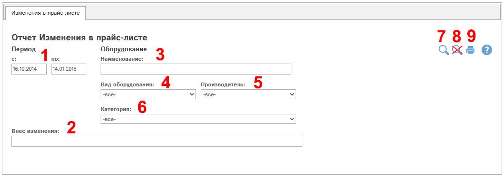
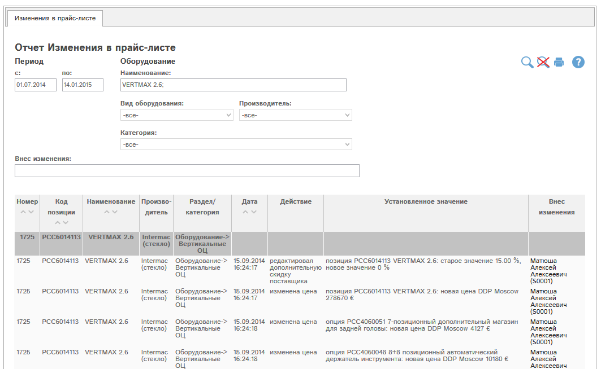

В этом отчете показаны все изменения в доступных Вам разделах прайс-листа за выбранный период.
Рассмотрим форму отчета:

Рис. Отчет «Изменения в прайс-листе»: форма отчета.
(1) – период: сведения отбираются в отчет по датам изменений, попадающим в выбранный период.
(2) - Внес изменения: отбор по сотруднику, вносившему изменения в прайс-лист.
Группа фильтров по позициям прайс-листа:
(3) - Наименование: отбор по наименованию оборудования
(4) - Вид оборудования: отбор по разделу прайс-листа
(5) - Производитель: отбор по производителю оборудования - для выбора нужно сначала выбрать значение в фильтре (6)
(6) - Категория - отбор по категории оборудования - для выбора нужно сначала выбрать значение в фильтрах (6-7).
(7) – кнопка  («найти») - осуществляет формирование
отчета по указанным параметрам в фильтрах (1)-(9) .
(«найти») - осуществляет формирование
отчета по указанным параметрам в фильтрах (1)-(9) .
(8) – кнопка  («сбросить все фильтры») – сбрасывает все
параметры фильтров (1)-(9), формирует отчет согласно общей логике.
(«сбросить все фильтры») – сбрасывает все
параметры фильтров (1)-(9), формирует отчет согласно общей логике.
(9) – кнопка  («печать») – производится печать отчета
согласно параметрам фильтров (1)-(9).
(«печать») – производится печать отчета
согласно параметрам фильтров (1)-(9).
Пример 1.
Найдем все изменения, включенные в оборудование VERTMAX 2.6. Введем это название в поле (3) и нажмем  :
:

Рис. Отчет Изменения в прайс-листе: поиск по оборудованию.